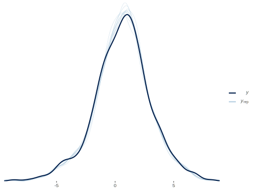

Bayesian Multilevel Mediation
The following demonstrates an indirect effect in a multilevel situation. It is
based on Yuan & MacKinnon 2009, which provides some Bugs code. In what follows
we essentially have two models, one where the ‘mediator’ is the response; the
other regards the primary response of interest (noted y). They will be referred
to with Med or Main respectively.
Data Setup
The two main models are expressed conceptually as follows:
\[\textrm{Mediator} \sim \alpha_{Med} + \beta_{Med}\cdot X\] \[y \sim \alpha_{Main} + \beta_{1\_{Main}}\cdot X + \beta_{2\_{Main}}\cdot \textrm{Mediator}\]
However, there will be random effects for a grouping variable for each coefficient, i.e. random intercepts and slopes, for both the mediator model and the outcome model.
Let’s create data to this effect.
library(tidyverse)
set.seed(8675309)
# random effects for mediator model
# create cov matrix of RE etc. with no covariance between model random effects
# covmat_RE = matrix(c(1,-.15,0,0,0,
# -.15,.4,0,0,0,
# 0,0,1,-.1,.15,
# 0,0,-.1,.3,0,
# 0,0,.15,0,.2), nrow=5, byrow = T)
# or with slight cov added to indirect coefficient RE; both matrices are pos def
covmat_RE = matrix(c( 1.00, -0.15, 0.00, 0.00, 0.00,
-0.15, 0.64, 0.00, 0.00, -0.10,
0.00, 0.00, 1.00, -0.10, 0.15,
0.00, 0.00, -0.10, 0.49, 0.00,
0.00, -0.10, 0.15, 0.00, 0.25), nrow = 5, byrow = TRUE)
# inspect
covmat_RE [,1] [,2] [,3] [,4] [,5]
[1,] 1.00 -0.15 0.00 0.00 0.00
[2,] -0.15 0.64 0.00 0.00 -0.10
[3,] 0.00 0.00 1.00 -0.10 0.15
[4,] 0.00 0.00 -0.10 0.49 0.00
[5,] 0.00 -0.10 0.15 0.00 0.25# inspect as correlation
cov2cor(covmat_RE) [,1] [,2] [,3] [,4] [,5]
[1,] 1.0000 -0.1875 0.0000000 0.0000000 0.00
[2,] -0.1875 1.0000 0.0000000 0.0000000 -0.25
[3,] 0.0000 0.0000 1.0000000 -0.1428571 0.30
[4,] 0.0000 0.0000 -0.1428571 1.0000000 0.00
[5,] 0.0000 -0.2500 0.3000000 0.0000000 1.00# simulate
re = MASS::mvrnorm(50,
mu = rep(0, 5),
Sigma = covmat_RE,
empirical = TRUE)
# random effects for mediator model
ranef_alpha_Med = rep(re[, 1], e = 10)
ranef_beta_Med = rep(re[, 2], e = 10)
# random effects for main model
ranef_alpha_Main = rep(re[, 3], e = 10)
ranef_beta1_Main = rep(re[, 4], e = 10)
ranef_beta2_Main = rep(re[, 5], e = 10)
## fixed effects
alpha_Med = 2
beta_Med = .2
alpha_Main = 1
beta1_Main = .3
beta2_Main = -.2
# residual variance
resid_Med = MASS::mvrnorm(500, 0, .75^2, empirical = TRUE)
resid_Main = MASS::mvrnorm(500, 0, .50^2, empirical = TRUE)
# Collect parameters for later comparison
params = c(
alpha_Med = alpha_Med,
beta_Med = beta_Med,
sigma_Med = sd(resid_Med),
alpha_Main = alpha_Main,
beta1_Main = beta1_Main,
beta2_Main = beta2_Main,
sigma_y = sd(resid_Main),
alpha_Med_sd = sqrt(diag(covmat_RE)[1]),
beta_Med_sd = sqrt(diag(covmat_RE)[2]),
alpha_sd = sqrt(diag(covmat_RE)[3]),
beta1_sd = sqrt(diag(covmat_RE)[4]),
beta2_sd = sqrt(diag(covmat_RE)[5])
)
ranefs = cbind(
gamma_alpha_Med = unique(ranef_alpha_Med),
gamma_beta_Med = unique(ranef_beta_Med),
gamma_alpha = unique(ranef_alpha_Main),
gamma_beta1 = unique(ranef_beta1_Main),
gamma_beta2 = unique(ranef_beta2_Main)
)Finally, we can create the data for analysis.
X = rnorm(500, sd = 2)
Med = (alpha_Med + ranef_alpha_Med) + (beta_Med + ranef_beta_Med) * X + resid_Med[, 1]
y = (alpha_Main + ranef_alpha_Main) + (beta1_Main + ranef_beta1_Main) * X +
(beta2_Main + ranef_beta2_Main) * Med + resid_Main[, 1]
group = rep(1:50, e = 10)
standat = list(
X = X,
Med = Med,
y = y,
Group = group,
J = length(unique(group)),
N = length(y)
)Model Code
In the following, the cholesky decomposition of the RE covariance matrix is used for efficiency. As a rough guide, the default data where N = 500 took about 5 min to run for the main model with iter=12000 and warmup = 2000.
data {
int<lower = 1> N; // Sample size
vector[N] X; // Explanatory variable
vector[N] Med; // Mediator
vector[N] y; // Response
int<lower = 1> J; // Number of groups
int<lower = 1,upper = J> Group[N]; // Groups
}
parameters{
real alpha_Med; // mediator model reg parameters and related
real beta_Med;
real<lower = 0> sigma_alpha_Med;
real<lower = 0> sigma_beta_Med;
real<lower = 0> sigmaMed;
real alpha_Main; // main model reg parameters and related
real beta1_Main;
real beta2_Main;
real<lower = 0> sigma_alpha;
real<lower = 0> sigma_beta1;
real<lower = 0> sigma_beta2;
real<lower = 0> sigma_y;
cholesky_factor_corr[5] Omega_chol; // chol decomp of corr matrix for random effects
vector<lower = 0>[5] sigma_ranef; // sd for random effects
matrix[J,5] gamma; // random effects
}
transformed parameters{
vector[J] gamma_alpha_Med;
vector[J] gamma_beta_Med;
vector[J] gamma_alpha;
vector[J] gamma_beta1;
vector[J] gamma_beta2;
for (j in 1:J){
gamma_alpha_Med[j] = gamma[j,1];
gamma_beta_Med[j] = gamma[j,2];
gamma_alpha[j] = gamma[j,3];
gamma_beta1[j] = gamma[j,4];
gamma_beta2[j] = gamma[j,5];
}
}
model {
vector[N] mu_y; // linear predictors for response and mediator
vector[N] mu_Med;
matrix[5,5] D;
matrix[5,5] DC;
// priors
// mediator model
// fixef
// for scale params the cauchy is a little more informative here due
// to the nature of the data
sigma_alpha_Med ~ cauchy(0, 1);
sigma_beta_Med ~ cauchy(0, 1);
alpha_Med ~ normal(0, sigma_alpha_Med);
beta_Med ~ normal(0, sigma_beta_Med);
// residual scale
sigmaMed ~ cauchy(0, 1);
// main model
// fixef
sigma_alpha ~ cauchy(0, 1);
sigma_beta1 ~ cauchy(0, 1);
sigma_beta2 ~ cauchy(0, 1);
alpha_Main ~ normal(0, sigma_alpha);
beta1_Main ~ normal(0, sigma_beta1);
beta2_Main ~ normal(0, sigma_beta2);
// residual scale
sigma_y ~ cauchy(0, 1);
// ranef sampling via cholesky decomposition
sigma_ranef ~ cauchy(0, 1);
Omega_chol ~ lkj_corr_cholesky(2.0);
D = diag_matrix(sigma_ranef);
DC = D * Omega_chol;
for (j in 1:J) // loop for Group random effects
gamma[j] ~ multi_normal_cholesky(rep_vector(0, 5), DC);
// Linear predictors
for (n in 1:N){
mu_Med[n] = alpha_Med + gamma_alpha_Med[Group[n]] +
(beta_Med + gamma_beta_Med[Group[n]]) * X[n];
mu_y[n] = alpha_Main + gamma_alpha[Group[n]] +
(beta1_Main + gamma_beta1[Group[n]]) * X[n] +
(beta2_Main + gamma_beta2[Group[n]]) * Med[n] ;
}
// sampling for primary models
Med ~ normal(mu_Med, sigmaMed);
y ~ normal(mu_y, sigma_y);
}
generated quantities{
real naive_ind_effect;
real avg_ind_effect;
real total_effect;
matrix[5,5] cov_RE;
vector[N] y_hat;
cov_RE = diag_matrix(sigma_ranef) * tcrossprod(Omega_chol) * diag_matrix(sigma_ranef);
naive_ind_effect = beta_Med*beta2_Main;
avg_ind_effect = beta_Med*beta2_Main + cov_RE[2,5];
total_effect = avg_ind_effect + beta1_Main;
for (n in 1:N){
y_hat[n] = alpha_Main + gamma_alpha[Group[n]] +
(beta1_Main + gamma_beta1[Group[n]]) * X[n] +
(beta2_Main + gamma_beta2[Group[n]]) * Med[n] ;
}
}Estimation
Run the model and examine results. The following assumes a character string or file (bayes_med_model) of the previous model code.
library(rstan)
fit = sampling(
bayes_med_model,
data = standat,
iter = 3000,
warmup = 2000,
thin = 4,
cores = 4,
control = list(adapt_delta = .99, max_treedepth = 15)
)Comparison
Main parameters include fixed and random effect standard deviation, plus those related to indirect effect.
mainpars = c(
'alpha_Med',
'beta_Med',
'sigmaMed',
'alpha_Main',
'beta1_Main',
'beta2_Main',
'sigma_y',
'sigma_ranef',
'naive_ind_effect',
'avg_ind_effect',
'total_effect'
)
print(
fit,
digits = 3,
probs = c(.025, .5, 0.975),
pars = mainpars
)Inference for Stan model: 24fc5f9a6f9e73e28a238db856680332.
4 chains, each with iter=3000; warmup=2000; thin=4;
post-warmup draws per chain=250, total post-warmup draws=1000.
mean se_mean sd 2.5% 50% 97.5% n_eff Rhat
alpha_Med 2.007 0.009 0.156 1.708 2.008 2.313 324 1.006
beta_Med 0.183 0.009 0.125 -0.030 0.177 0.449 188 1.002
sigmaMed 0.745 0.001 0.028 0.694 0.744 0.801 939 1.003
alpha_Main 0.964 0.008 0.165 0.649 0.964 1.314 456 1.003
beta1_Main 0.268 0.007 0.119 0.026 0.269 0.512 299 1.008
beta2_Main -0.176 0.004 0.077 -0.317 -0.179 -0.023 436 0.999
sigma_y 0.501 0.001 0.018 0.468 0.501 0.538 758 0.999
sigma_ranef[1] 1.061 0.003 0.120 0.848 1.051 1.324 1188 1.000
sigma_ranef[2] 0.854 0.003 0.087 0.705 0.848 1.047 842 0.998
sigma_ranef[3] 1.003 0.005 0.136 0.767 0.993 1.302 761 0.998
sigma_ranef[4] 0.783 0.003 0.086 0.638 0.777 0.981 775 1.001
sigma_ranef[5] 0.479 0.002 0.065 0.366 0.473 0.611 856 0.997
naive_ind_effect -0.034 0.002 0.030 -0.108 -0.028 0.004 205 1.007
avg_ind_effect -0.151 0.003 0.075 -0.316 -0.149 -0.013 570 1.006
total_effect 0.117 0.008 0.138 -0.169 0.118 0.391 314 1.007
Samples were drawn using NUTS(diag_e) at Wed Nov 25 17:37:09 2020.
For each parameter, n_eff is a crude measure of effective sample size,
and Rhat is the potential scale reduction factor on split chains (at
convergence, Rhat=1).We can use a piecemeal mixed model via lme4 for initial comparison. However, it can’t directly estimate mediated effect, and it won’t pick up on correlation of random effects between models.
library(lme4)
mod_Med = lmer(Med ~ X + (1 + X | group))
summary(mod_Med)Linear mixed model fit by REML ['lmerMod']
Formula: Med ~ X + (1 + X | group)
REML criterion at convergence: 1456.7
Scaled residuals:
Min 1Q Median 3Q Max
-2.55601 -0.66077 -0.00442 0.57621 3.12555
Random effects:
Groups Name Variance Std.Dev. Corr
group (Intercept) 1.0315 1.0156
X 0.6688 0.8178 -0.27
Residual 0.5513 0.7425
Number of obs: 500, groups: group, 50
Fixed effects:
Estimate Std. Error t value
(Intercept) 2.0221 0.1480 13.665
X 0.2197 0.1172 1.874
Correlation of Fixed Effects:
(Intr)
X -0.257mod_Main = lmer(y ~ X + Med + (1 + X + Med | group))
summary(mod_Main)Linear mixed model fit by REML ['lmerMod']
Formula: y ~ X + Med + (1 + X + Med | group)
REML criterion at convergence: 1211.9
Scaled residuals:
Min 1Q Median 3Q Max
-2.6843 -0.6232 0.0540 0.5721 2.5242
Random effects:
Groups Name Variance Std.Dev. Corr
group (Intercept) 0.9208 0.9596
X 0.5657 0.7521 -0.19
Med 0.2051 0.4529 0.52 -0.03
Residual 0.2479 0.4979
Number of obs: 500, groups: group, 50
Fixed effects:
Estimate Std. Error t value
(Intercept) 0.98312 0.15318 6.418
X 0.27141 0.10924 2.484
Med -0.19818 0.07234 -2.739
Correlation of Fixed Effects:
(Intr) X
X -0.144
Med 0.218 -0.055# should equal the naive estimate in the following code
lme_indirect_effect = fixef(mod_Med)['X'] * fixef(mod_Main)['Med']Using the mediation package will provide a better estimate, and can handle this simple mixed model setting.
# library(mediation)
mediation_mixed = mediation::mediate(
model.m = mod_Med,
model.y = mod_Main,
treat = 'X',
mediator = 'Med'
)
summary(mediation_mixed)
Causal Mediation Analysis
Quasi-Bayesian Confidence Intervals
Mediator Groups: group
Outcome Groups: group
Output Based on Overall Averages Across Groups
Estimate 95% CI Lower 95% CI Upper p-value
ACME -0.1249 -0.2017 -0.06 <2e-16 ***
ADE 0.2713 0.0493 0.49 0.016 *
Total Effect 0.1464 -0.0894 0.39 0.230
Prop. Mediated -0.6411 -7.6171 6.73 0.230
---
Signif. codes: 0 '***' 0.001 '**' 0.01 '*' 0.05 '.' 0.1 ' ' 1
Sample Size Used: 500
Simulations: 1000 Extract parameters for comparison.
pars_primary = get_posterior_mean(fit, pars = mainpars)[, 5]
pars_re_cov = get_posterior_mean(fit, pars = 'Omega_chol')[, 5] # or take 'cov_RE' from monte carlo sim
pars_re = get_posterior_mean(fit, pars = c('sigma_ranef'))[, 5]Fixed effects and random effect variances.
| param | true | bayes | lme4 |
|---|---|---|---|
| alpha_Med | 2.00 | 2.007 | 2.022 |
| beta_Med | 0.20 | 0.183 | 0.220 |
| sigma_Med | 0.75 | 0.745 | 0.743 |
| alpha_Main | 1.00 | 0.964 | 0.983 |
| beta1_Main | 0.30 | 0.268 | 0.271 |
| beta2_Main | -0.20 | -0.176 | -0.198 |
| sigma_y | 0.50 | 0.501 | 0.498 |
| alpha_Med_sd | 1.00 | 1.061 | 1.016 |
| beta_Med_sd | 0.80 | 0.854 | 0.818 |
| alpha_sd | 1.00 | 1.003 | 0.960 |
| beta1_sd | 0.70 | 0.783 | 0.752 |
| beta2_sd | 0.50 | 0.479 | 0.453 |
Compare the covariances of the random effects. The first shows the full covariance matrix for mediator and outcome, then broken out separately.
$true
[,1] [,2] [,3] [,4] [,5]
[1,] 1.00 -0.15 0.00 0.00 0.00
[2,] -0.15 0.64 0.00 0.00 -0.10
[3,] 0.00 0.00 1.00 -0.10 0.15
[4,] 0.00 0.00 -0.10 0.49 0.00
[5,] 0.00 -0.10 0.15 0.00 0.25
$estimates
[,1] [,2] [,3] [,4] [,5]
[1,] 1.13 -0.21 0.05 0.03 0.02
[2,] -0.21 0.72 0.05 -0.01 -0.11
[3,] 0.05 0.05 0.96 -0.13 0.20
[4,] 0.03 -0.01 -0.13 0.58 0.00
[5,] 0.02 -0.11 0.20 0.00 0.21$vcov_Med
[,1] [,2]
[1,] 1.00 -0.15
[2,] -0.15 0.64
$vcov_Med_bayes
[,1] [,2]
[1,] 1.13 -0.21
[2,] -0.21 0.72
$vcov_Med_lme4
(Intercept) X
(Intercept) 1.03 -0.22
X -0.22 0.67$vcov_Main
[,1] [,2] [,3]
[1,] 1.00 -0.10 0.15
[2,] -0.10 0.49 0.00
[3,] 0.15 0.00 0.25
$vcov_Main_bayes
[,1] [,2] [,3]
[1,] 0.96 -0.13 0.20
[2,] -0.13 0.58 0.00
[3,] 0.20 0.00 0.21
$vcov_Main_lme4
(Intercept) X Med
(Intercept) 0.92 -0.14 0.22
X -0.14 0.57 -0.01
Med 0.22 -0.01 0.21Compare indirect effects
| true | est | naiveBayes | naiveLme | mediation_pack |
|---|---|---|---|---|
| -0.14 | -0.151 | -0.034 | -0.044 | -0.125 |
Note that you can use brms to estimate this model as follows. The i allows the random effects to correlate across Mediator and outcome models. We have to convert the correlation estimate back to the covariance estimate to get the indirect value to compare to our base Stan result.
library(brms)
f =
bf(Med ~ X + (1 + X |i| group)) +
bf(y ~ X + Med + (1 + X + Med |i| group)) +
set_rescor(FALSE)
fit_brm = brm(
f,
data = data.frame(X, Med, y, group),
cores = 4,
thin = 4,
seed = 1234
)summary(fit_brm) Family: MV(gaussian, gaussian)
Links: mu = identity; sigma = identity
mu = identity; sigma = identity
Formula: Med ~ X + (1 + X | i | group)
y ~ X + Med + (1 + X + Med | i | group)
Data: data.frame(X, Med, y, group) (Number of observations: 500)
Samples: 4 chains, each with iter = 2000; warmup = 1000; thin = 4;
total post-warmup samples = 1000
Group-Level Effects:
~group (Number of levels: 50)
Estimate Est.Error l-95% CI u-95% CI Rhat Bulk_ESS Tail_ESS
sd(Med_Intercept) 1.08 0.12 0.86 1.34 1.00 963 853
sd(Med_X) 0.86 0.09 0.70 1.06 1.00 713 787
sd(y_Intercept) 1.02 0.13 0.79 1.31 1.00 922 955
sd(y_X) 0.80 0.09 0.64 1.00 1.00 867 650
sd(y_Med) 0.48 0.07 0.37 0.63 1.00 887 755
cor(Med_Intercept,Med_X) -0.24 0.14 -0.50 0.03 1.00 619 589
cor(Med_Intercept,y_Intercept) 0.06 0.16 -0.25 0.36 1.00 953 949
cor(Med_X,y_Intercept) 0.06 0.15 -0.25 0.35 1.00 810 990
cor(Med_Intercept,y_X) 0.03 0.15 -0.25 0.32 1.01 910 915
cor(Med_X,y_X) -0.00 0.15 -0.28 0.30 1.00 956 728
cor(y_Intercept,y_X) -0.18 0.15 -0.46 0.13 1.00 741 819
cor(Med_Intercept,y_Med) 0.03 0.16 -0.29 0.37 1.00 947 902
cor(Med_X,y_Med) -0.29 0.15 -0.56 0.02 1.00 1042 782
cor(y_Intercept,y_Med) 0.45 0.17 0.10 0.75 1.00 841 782
cor(y_X,y_Med) -0.01 0.16 -0.31 0.30 1.00 1042 850
Population-Level Effects:
Estimate Est.Error l-95% CI u-95% CI Rhat Bulk_ESS Tail_ESS
Med_Intercept 2.02 0.15 1.72 2.32 1.00 722 849
y_Intercept 0.99 0.17 0.67 1.33 1.00 796 904
Med_X 0.22 0.13 -0.02 0.46 1.00 711 908
y_X 0.31 0.12 0.07 0.56 1.00 899 995
y_Med -0.20 0.08 -0.35 -0.05 1.00 1001 994
Family Specific Parameters:
Estimate Est.Error l-95% CI u-95% CI Rhat Bulk_ESS Tail_ESS
sigma_Med 0.74 0.03 0.69 0.80 1.00 973 889
sigma_y 0.50 0.02 0.46 0.54 1.00 986 960
Samples were drawn using sampling(NUTS). For each parameter, Bulk_ESS
and Tail_ESS are effective sample size measures, and Rhat is the potential
scale reduction factor on split chains (at convergence, Rhat = 1).hypothesis(
fit_brm,
'b_y_Med*b_Med_X + cor_group__Med_X__y_Med*sd_group__Med_X*sd_group__y_Med = 0',
class = NULL,
seed = 1234
)Hypothesis Tests for class :
Hypothesis Estimate Est.Error CI.Lower CI.Upper Evid.Ratio Post.Prob Star
1 (b_y_Med*b_Med_X+... = 0 -0.17 0.08 -0.33 -0.03 NA NA *
---
'CI': 90%-CI for one-sided and 95%-CI for two-sided hypotheses.
'*': For one-sided hypotheses, the posterior probability exceeds 95%;
for two-sided hypotheses, the value tested against lies outside the 95%-CI.
Posterior probabilities of point hypotheses assume equal prior probabilities.Visualization
library(bayesplot)
pp_check(
standat$y,
rstan::extract(fit, par = 'y_hat')$y_hat[1:10, ],
fun = 'dens_overlay'
)
Source
Original code available at: https://github.com/m-clark/Miscellaneous-R-Code/blob/master/ModelFitting/Bayesian/rstan_multilevelMediation.R